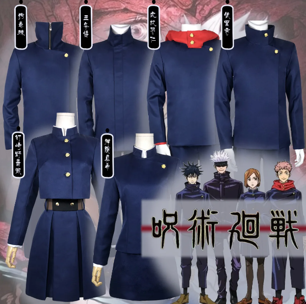

Uniforme
Los uniformes son proporcionados por el colegio al momento de la admisión de los estudiantes. Los diseños no difieren por temporada, o sea que siguen usando el mismo uniforme en invierno y en verano. La confección de estos la realiza un sastre que actúa como un proveedor en el mundo del jujutsu, por lo que los materiales son más resistentes a la energía maldita que la ropa ordinaria. Comúnmente el uniforme masculino consiste en chaquetas azules oscuras asimétricas con cuello alto y dos botones de remolino del lado izquierdo. El uniforme se completa con pantalones azules oscuros a juego. Comúnmente, el uniforme normal femenino consiste en la parte superior de una chaqueta con cuello alto similar al del uniforme masculino, y en la parte inferior, el uso de una falda. Los uniformes de los estudiantes pueden variar en diseño libremente. Sin embargo, son personalizados hasta cierto punto. Un ítem que es permanente en los uniformes son los botones con forma de remolino, y al menos, vestir una prenda de color negro. Varios de los estudiantes tiene su propio estilo de uniforme: la parte superior del uniforme de Nobara Kugisaki es similar al tradicional uniforme gakuran, con botones desde arriba hasta el medio; y el de Yuji Itadori está modificado con una sudadera, los cuales son uno de los tantos posibles ejemplos.